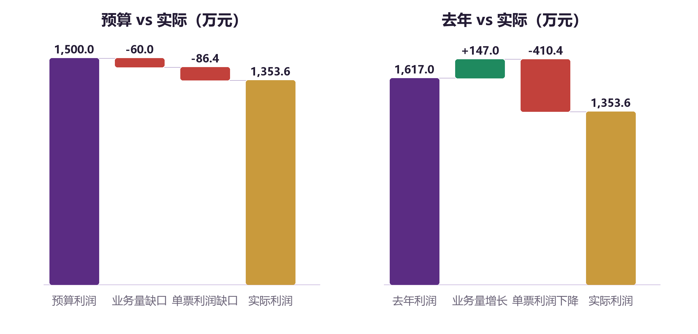

本章为虚构案例，所有省区、网点、客户和数据均为示例，仅用于演示分析逻辑。
8.1 背景：增长为什么没有带来利润
某省区经营快递网络，覆盖 1 个分拨中心、210 个网点、3 个城市服务中心。上月经营例会，团队遇到一个典型难题：
- 日均业务量从去年同期的 110 万票增长到 120 万票，增长 9.1%；
- 但月利润从 1,617 万元下降到 1,353.6 万元，下降 16.3%；
- 预算目标是 125 万票/日、1,500 万元利润，利润完成率只有 90.2%；
- 更奇怪的是，头部差距从 35 万票缩小到 30 万票，份额在追赶，利润却在下降。
“量也涨了，份额也追了，为什么利润没了？”这就是本章要回答的问题。
8.2 结果：三张表看清基本盘
表8-1 基本经营结果
左右滑动查看完整表格
| 指标 | 去年 | 预算 | 实际 | 同比 | 预算完成 |
|---|---|---|---|---|---|
| 日均业务量（万票/日） | 110.0 | 125.0 | 120.0 | +9.1% | 96.0% |
| 月业务量（万票） | 3,300 | 3,750 | 3,600 | +9.1% | 96.0% |
| 单票收入（元/票） | 2.28 | 2.25 | 2.20 | −3.5% | 97.8% |
| 单票成本（元/票） | 1.790 | 1.850 | 1.824 | +1.9% | 98.6% |
| 单票利润（元/票） | 0.490 | 0.400 | 0.376 | −23.3% | 94.0% |
| 月利润（万元） | 1,617.0 | 1,500.0 | 1,353.6 | −16.3% | 90.2% |
| 头部差距（万票/日） | 35.0 | 25.0 | 30.0 | −5.0 | 差 5.0 |
| 负毛利网点（个） | 15 | 12 | 18 | +3 | 超 6 |
| CCR（万分之） | 48 | 50 | 62 | +14 | 超 12 |
| 平台指数（淘天） | 4.70 | 4.75 | 4.60 | −0.10 | 低 0.15 |
先看结果层，有三个矛盾：
- 量增利减：业务量 +9.1%，利润 −16.3%。
- 份额追近、预算未达：头部差距缩小 5 万票，但比预算目标还差 5 万票。
- 成本只涨 1.9%，利润却跌 23.3%：因为收入跌了 3.5%，而成本基数更大。
这三个矛盾，必须用单票模型和结构分析来解释。
8.3 单票经济模型：每一票发生了什么
表8-2 单票经济模型
左右滑动查看完整表格
| 项目 | 去年 | 实际 | 变化 | 对单票利润的影响 |
|---|---|---|---|---|
| 单票收入 | 2.280 | 2.200 | −0.080 | −0.080 |
| 单票运能成本 | 0.580 | 0.620 | +0.040 | −0.040 |
| 单票操作成本 | 0.320 | 0.324 | +0.004 | −0.004 |
| 单票网络成本 | 0.790 | 0.780 | −0.010 | +0.010 |
| 单票质量/其他 | 0.100 | 0.100 | 0.000 | 0.000 |
| 单票总成本 | 1.790 | 1.824 | +0.034 | −0.034 |
| 单票利润 | 0.490 | 0.376 | −0.114 | −0.114 |
单票利润下降 0.114 元，拆开就是：
- 收入端贡献 −0.080 元；
- 成本端贡献 −0.034 元；
- 其中运能 +0.040、操作 +0.004、网络 −0.010。
收入下降是主因，成本上升是次因。 但成本上升里，运能占了绝大部分；网络成本还降了 0.01 元，为什么？这就是后面要讲的“成本转移”。

8.4 利润桥：钱从哪里漏掉
表8-3 利润桥（预算 vs 实际）
| 项目 | 金额（万元） | 说明 |
|---|---|---|
| 预算利润 | 1,500.0 | 125 万票/日 × 30 天 × 0.40 元 |
| 业务量缺口 | −60.0 | （120 − 125）× 30 × 0.40 |
| 单票利润缺口 | −86.4 | 120 × 30 ×（0.376 − 0.400） |
| 实际利润 | 1,353.6 | 与报表一致 |
表8-4 利润桥（去年 vs 实际）
| 项目 | 金额（万元） | 说明 |
|---|---|---|
| 去年利润 | 1,617.0 | 110 万票/日 × 30 天 × 0.49 元 |
| 业务量增长 | +147.0 | （120 − 110）× 30 × 0.49 |
| 单票利润下降 | −410.4 | 120 × 30 ×（0.376 − 0.490） |
| 实际利润 | 1,353.6 | 与报表一致 |
表8-5 单票利润下降的进一步拆解
| 因素 | 单票影响（元） | 月影响（万元） | 说明 |
|---|---|---|---|
| 价格下降 | −0.050 | −180.0 | 为守住份额，对部分客户让价 |
| 货型变轻 | −0.030 | −108.0 | 0–0.5KG 占比 +5pp，均重 −0.10kg |
| 运能上升 | −0.040 | −144.0 | 装载率下降、里程上升、单边增多 |
| 操作上升 | −0.004 | −14.4 | 人效下降、操作次数略增 |
| 网络下降 | +0.010 | +36.0 | 派费下调、直送占比上升 |
| 质量/其他 | 0.000 | 0.0 | 总量持平，但结构恶化 |
| 合计 | −0.114 | −410.4 |
这张表是整章的核心：利润不是被一个“大坏蛋”吃掉的，而是被价格、货型、运能、操作四个因素一起吃掉的。 网络成本还贡献了 +36 万元的正贡献，但它是以网点亏损为代价的。
8.5 归因一：价格与货型——收入为什么降了 8 分
价格：主动让价 0.05 元。
为了守住市场份额、阻止头部企业渗透，省区对部分电商客户让价，平均单票收入下降 0.05 元。效果是：
- 业务量增长 9.1%，头部差距从 35 万票缩小到 30 万票；
- 但按 3,600 万票算，让价 0.05 元/票，一个月少收入 180 万元。
货型：轻小件占比上升，均重下降 0.10kg。
0–0.5KG 占比从 30% 上升到 35%，0.5–1KG 从 30% 上升到 31%，1–3KG 从 28% 下降到 24%，3KG 以上从 12% 下降到 10%。均重从 1.25kg 降到 1.15kg。
货型变轻的影响：
- 单票收入下降约 0.03 元（按重量计费部分减少）；
- 单票运能成本本应下降，但因为方量装载率上升、吨位装载率下降，实际运能成本反而上升；
- 单票操作成本相对刚性（按票计），轻小件占比上升，操作票数增加，单票操作成本没有明显下降。
价格与货型的叠加。
收入下降 0.08 元 = 价格 −0.05 元 + 货型 −0.03 元
这不是“客户变少了”，而是“每票卖得更便宜、更轻了”。如果只看到业务量增长 9.1%，会误以为经营很好；拆开收入，才发现是“降价 + 轻量化”换来的增长。
8.6 归因二：装载与路由——运能为什么涨了 4 分
装载率：吨位 85% → 82%，方量 84% → 88%。
轻泡货占比上升，导致：
- 方量装载率上升 4pp（体积先满）；
- 吨位装载率下降 3pp（重量没满，亏吨）；
- 车均票数从 5,000 降到 4,800（单车装的票少了）；
- 单票运能成本上升约 0.025 元。
票均里程：1,020km → 1,050km。
目的区域结构变化，远端占比上升，票均里程增加 30km（+2.9%），单票运能成本上升约 0.015 元。
单边：趟数占比 16% → 18%，成本占比 10% → 12%。
回程货源不足，单边趟数增加，单票运能成本上升约 0.008 元。
其他降本：−0.008 元。
通过车型优化、能源管理、路线调整，抵消了一部分上涨。
合计：
+0.025（装载）+ 0.015（里程）+ 0.008（单边）− 0.008（其他）= +0.040 元
路由：直达率 65% → 62%，中转量 40 → 45 万票/日。
直达率下降 3pp，更多包裹走中转：
- 中转量增加 5 万票/日，操作次数和操作成本上升；
- 时效下降（多一次分拣、多一次装卸）；
- 破损/遗失风险上升；
- 但单趟装载率可能提升，运能成本有对冲。
这就是“路由三本账”的典型：为了装载率/成本，牺牲了时效和质量；最终质量成本又把省下的钱吐回去。
8.7 归因三：操作与质量——人效降了，罚款涨了
操作：人均效能 2,600 → 2,540 票/人/日，中心人数 760 → 850。
业务量增长 9.1%，中心人数增长 11.8%，人效下降约 2.3%。原因：
- 轻小件占比上升，操作票数增加；
- 中转量增加，二次操作增多；
- 新员工比例上升，熟练度不足；
- 设备/场地没有同步扩容，动线拥堵。
结果：单次操作成本从 0.178 升到 0.180 元，单票操作成本从 0.320 升到 0.324 元。
质量：全面恶化。
表8-6 质量指标变化
左右滑动查看完整表格
| 指标 | 去年 | 实际 | 变化 | 含义 |
|---|---|---|---|---|
| 遗失率 | 0.025% | 0.030% | +0.005pp | 每万票遗失从 2.5 票升到 3.0 票 |
| 破损率 | 0.10% | 0.12% | +0.02pp | 每十万票破损从 100 票升到 120 票 |
| 出港超时库存率 | 1.2% | 1.8% | +0.6pp | 始发积压 |
| 进港超时库存率 | 1.4% | 2.1% | +0.7pp | 到件积压 |
| CCR | 48 | 62 | +14 | 每万票投诉增加 14 票 |
| 重复进线率 | 15% | 18% | +3pp | 一次解决率下降 |
| 错分率 | 0.30% | 0.35% | +0.05pp | 分拣准确性下降 |
| 混错建包率 | 0.22% | 0.28% | +0.06pp | 建包错误增加 |
| 时效达成率 | 95% | 92% | −3pp | 时效恶化 |
| 漏扫描率 | 0.10% | 0.15% | +0.05pp | 轨迹缺失增加 |
| 服务指数 | 90 | 86 | −4 | 综合服务下降 |
质量恶化的链条。
轻小件/中转量 ↑ → 操作票数 ↑、人效 ↓ → 错分/混错建包/漏扫描 ↑ → 遗失/破损/超时 ↑ → CCR ↑ → 考核赔付 ↑
考核赔付：275 → 320 万元，增加 45 万元。
表8-7 主要考核赔付科目（实际）
| 科目 | 金额（万元） | 同比变化 | 背后问题 |
|---|---|---|---|
| 应建未建-始发责任 | 45 | +5 | 建包不规范 |
| 破损件考核 | 45 | +15 | 破损率上升 |
| 客诉理赔 | 28 | +10 | 投诉/理赔增加 |
| 市场部发运超时/交件及时率 | 25 | +8 | 发运晚点 |
| 升级投诉 | 20 | +5 | 投诉升级 |
| 省区物流停滞 | 18 | +6 | 中转/派送滞留 |
| 客诉理赔考核 | 18 | +3 | 理赔处理不规范 |
| 网点仲裁 | 12 | +2 | 网点间责任争议 |
| 其他 | 109 | −9 | 其他科目 |
| 合计 | 320 | +45 |
注意：质量/其他单票成本仍是 0.10 元，但结构恶化了——考核赔付增加了 45 万元，其他费用下降了 15 万元，净增 30 万元，刚好被 9.1% 的业务量增长摊薄。这就是“总量持平掩盖结构恶化”的典型。如果只看“质量/其他 0.10 没变”，会错过最重要的风险信号。
8.8 归因四：网络与网点——省下的派费，变成了网点亏损
网络成本：0.79 → 0.78 元/票，下降 0.01 元。
原因：
- 派费标准下调约 0.03 元/票；
- 直送占比从 25% 提升到 30%；
- 线上发薪件量占比从 60% 提升到 75%；
- 但终端投入、驿站补贴增加，抵消了一部分。
网点：负毛利网点 15 → 18 个，亏损金额 −60 → −85 万元/月。
表8-8 网点健康变化
| 指标 | 去年 | 实际 | 变化 |
|---|---|---|---|
| L4/L5 网点（个） | 202 | 210 | +8 |
| 共配清理（个） | 8 | 12 | +4 |
| 剩余共配网点（个） | 10 | 6 | −4 |
| 负毛利网点（个） | 15 | 18 | +3 |
| 负毛利金额（万元/月） | −60 | −85 | −25 |
| 网点质量得分 | 80 | 78 | −2 |
| 50 分以下网点（个） | 4 | 5 | +1 |
| 虚假签收率 | 0.05% | 0.08% | +0.03pp |
这是一个典型的“成本转移”：
- 总部网络成本下降 0.01 元/票，按 3,600 万票算，省了 36 万元/月；
- 但负毛利网点亏损增加 25 万元/月；
- 网点质量下降、虚假签收上升，带来 CCR 上升、平台指数下降、考核赔付增加；
- 实际“净节省”很可能为负。
共配清理： 从 8 个增加到 12 个，剩余从 10 个降到 6 个，进度不错；但清理后，部分区域派送成本上升、覆盖出现空白，短期加剧了网络成本压力。这是“先立后破”没有完全做到位的表现。
L4/L5 网点： 从 202 增加到 210，网络骨架增强；但新增/升级网点的质量得分参差，个别网点负毛利，说明“拔苗助长”的风险。
8.9 归因五：直客——规模上去了，利润和现金没跟上
表8-9 直客业务与服务质量
左右滑动查看完整表格
| 指标 | 去年 | 实际 | 目标 | 差距 |
|---|---|---|---|---|
| 客户数（个） | 38 | 42 | N+（50） | −8 |
| 业务量（万票/日） | 8.0 | 8.8 | 10.5 | −1.7 |
| 利润（万元/月） | −10 | −21 | 0 | −21 |
| 单票利润（元/票） | −0.004 | −0.008 | 0 | −0.008 |
| 应收账款回收率 | 98% | 96% | 100% | −4pp |
| 出港交件及时率 | 95% | 93% | 95% | −2pp |
| CCR（万分之） | 55 | 75 | 50 | +25 |
| 破损率 | 0.14% | 0.18% | 0.15% | +0.03pp |
| 快速理赔 | 72% | 68% | 75% | −7pp |
直客的问题不是“没上量”，而是“上量不赚钱、服务还下降”。
- 客户数从 38 到 42，业务量从 8.0 到 8.8 万票/日，规模在增长；
- 但单票利润从 −0.004 降到 −0.008，利润从 −10 万降到 −21 万；
- 应收账款回收率从 98% 降到 96%，现金风险上升；
- 服务质量全面低于目标：交件及时率 93%、CCR 75、破损率 0.18%、快速理赔 68%。
原因分析。
- 价格偏低：为了抢直客，给了较大折扣，但服务成本没有同步下降。
- 货型/服务复杂：直客的货型、时效、上门、退换货要求高，操作成本高。
- 网络质量拖累：中心/网点质量下降，直客服务首当其冲。
- 应收账款放松：为了上量，账期放宽，回款率下降。
- 服务能力不足：直客专属客服、理赔、仓配能力没有跟上。
直客的“三条健康线”全部亮红灯：
- 规模线：客户数、业务量未达目标；
- 盈利线：单票利润、利润为负；
- 现金线：回款率低于 100%。
这说明直客拓展处于“花钱买规模”的阶段，必须设止损线，不能无限扩张。
8.10 平台与外部质量：分数下降的连锁反应
表8-10 平台指标
| 指标 | 去年 | 实际 | 变化 |
|---|---|---|---|
| 淘天指数 | 4.70 | 4.60 | −0.10 |
| 抖音店铺评分 | 4.80 | 4.70 | −0.10 |
| 物流停滞投诉（万分之） | 15 | 25 | +10 |
| 时效排名 | 3 | 5 | −2 |
| 破损率 | 0.10% | 0.12% | +0.02pp |
平台指数下降的传导。
时效达成率 95% → 92% → 物流停滞投诉 15 → 25 → 淘天指数 4.7 → 4.6 → 平台流量/商家订单下降 → 业务量下降 → 网络密度下降 → 成本上升
一个粗略的估算。 平台指数下降 0.1，假设导致平台订单减少 1.5%，按 120 万票/日算，每天少 1.8 万票，一个月少 54 万票；按单票利润 0.376 元算，损失约 20.3 万元/月。这还不包括平台罚款、活动资格丧失、商家流失的长期影响。
这个估算不是精确预测，而是提醒：平台指数不是“虚名”，它会变成业务量和利润。
8.11 行动方案：先止血，再修复，再增长
表8-11 行动方案
左右滑动查看完整表格
| 优先级 | 问题 | 动作 | 责任 | 关键指标 | 期限 |
|---|---|---|---|---|---|
| P0 | 负毛利客户/网点 | 一客户一价复核，负毛利客户提价或限收；负毛利网点“一网点一策” | 省区经营/网络 | 负毛利网点数、单票利润 | 30 天 |
| P0 | 破损/遗失 | 建包、倒包、装卸专项；破损高发线路加固包装；漏扫描闭环 | 中心/质量 | 破损率、遗失率、CCR | 30 天 |
| P1 | 装载/路由 | 重泡搭配、车型匹配、班次合并；直达率提升 3pp；单边回程货源 | 运能/路由 | 吨位装载率、单票运能成本 | 60 天 |
| P1 | 人效 | 排班优化、临时工弹性、自动化供包；新员工培训 | 中心 | 人均效能、单次操作成本 | 60 天 |
| P1 | 直客 | 提价/筛客户、回款专项、直客客服/理赔专线 | 直客/财务 | 单票利润、回款率、CCR | 90 天 |
| P2 | 平台指数 | 物流停滞专项、时效攻坚、快速理赔 | 质量/客服 | 淘天指数、TDT 排名 | 90 天 |
| P2 | 网络健康 | 共配清理“先立后破”；L4/L5 网点质量帮扶 | 网络 | 网点质量得分、剩余共配数 | 180 天 |
动作背后的逻辑。
- 先止血：负毛利客户/网点、破损/遗失，是当期利润和 CCR 的最大出血点。
- 再修复：装载、路由、人效，决定成本能否降下来；直客提价/回款，决定利润和现金。
- 再增长：平台指数、网络健康，决定下一阶段的业务量。
8.12 效果测算：从 1,353.6 万到接近 1,500 万
假设上述动作在 3 个月内逐步落地，按保守口径测算：
表8-12 改善测算
| 动作 | 测算逻辑 | 月利润改善（万元） |
|---|---|---|
| 0–0.5KG 底价 +0.03 元 | 覆盖 35% 票量，收入 +0.0105 元/票；量减 1.2 万票/日 | +23.9 |
| 吨位装载率 +2pp | 单票运能成本 −0.015 元 | +53.1 |
| 直达率 +3pp | 单票操作成本 −0.004 元 | +14.2 |
| 质量改善 | 考核赔付 −40 万元/月 | +40.0 |
| 网络投入 | 单票网络成本 +0.005 元（先立后破） | −17.7 |
| 直客提价/筛客户 | 单票利润从 −0.008 到 0，量减 0.3 万票/日 | +20.4 |
| 合计 | +133.9 |
改善后月利润约：
1,353.6 + 133.9 = 1,487.5 万元
接近预算 1,500 万元，但仍差约 12.5 万元。差距主要靠：
- 平台指数修复带来的业务量回流；
- 共配清理后的网络成本优化；
- 直客仓配/时效产品的增量。
这个测算的意义，不是“精确预测”，而是说明：利润缺口不是靠一个“大动作”补上的，而是靠六个“小动作”叠加。 每个动作 10–50 万元，加起来才能补上 146.4 万元的预算缺口。
8.13 案例启示
启示一：增长有质量之分。 业务量增长 9.1%，如果是降价、轻泡货、负毛利客户带来的，就是“虚胖”。看增长，必须同时看单票收入、单票利润、货型、客户质量。
启示二：成本有真假之分。 网络成本下降 0.01 元，看似降本，实际是把成本转嫁给网点。看降本，必须同时看网点毛利、服务质量、CCR。
启示三：质量成本有滞后性。 破损、遗失、CCR 的恶化，不会立刻反映在利润表上；但会在 1–3 个月后通过赔付、平台指数、业务量反噬。质量投入要前置。
启示四：结构比总量更重要。 质量/其他单票成本 0.10 元没变，但考核赔付增加了 45 万元，其他费用下降了 15 万元。总量持平掩盖了结构恶化。看指标要拆结构。
启示五：指标是网，不是点。 价格、货型、装载、路由、操作、网络、质量、平台，任何一个动作都会牵动其他指标。管理者要算“三本账”：利润账、质量账、网络账。
这个案例没有“坏人”。省区为了份额降价，网络为了降本压派费，中心为了时效赶进度，直客为了上量放宽账期——每个动作单看都合理，合在一起却造成“量增利减”。这就是为什么需要一套完整的指标体系，而不是单点考核。